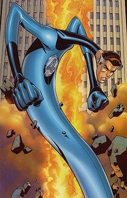
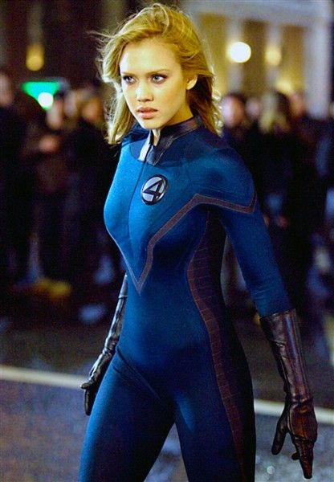
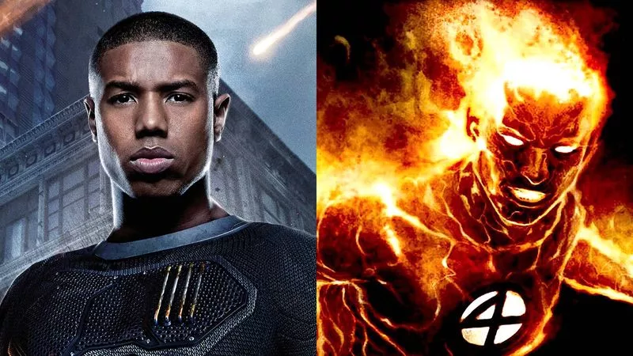
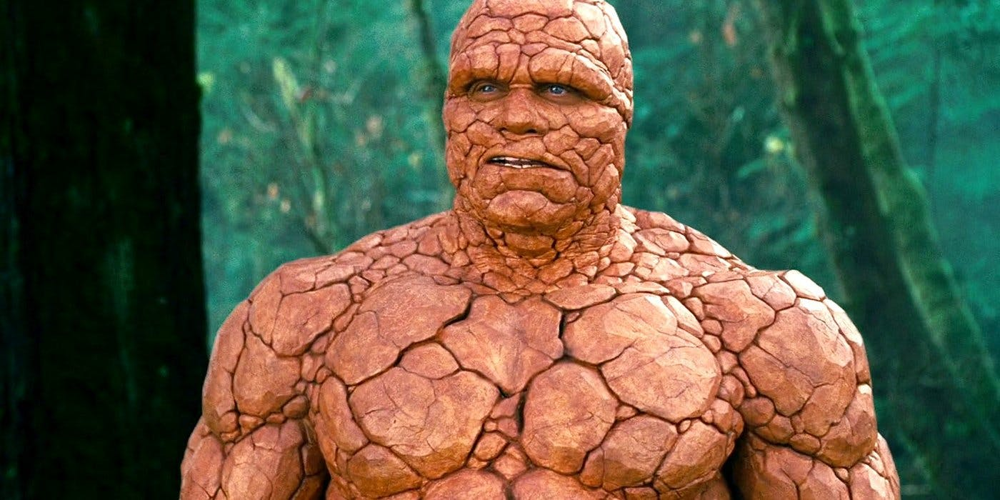

The Superheroes in Fantastic Four got their powers when a spacecraft, that Reed Richards invented, was bombarded by cosmic radiation on it's maiden voyage.
Mister Fantastic is also known as Reed Richards, Mister Fantastic can strech into any shape he desires. He is maried to Susan Storm, also known as Invisable Woman. He has a son named Franklin Richards and a daughter named Valeria Richards. He can be very focused when conflicted with a challenge. His best friend is Benjamin Grimm who is also known as Thing. He is the founder of Fantastic Four.
Mister Fantastic Wikipedia Invisable Woman is also known as Susan Storm, she is maried to Reed Richards, also known as Mister Fantastic. Her father used to be a Docter, but after Susan's mother, Mary, died her father gave up on his job and became a drunk and a gambler and eventually got arrested for accedentally an underworld loan shark during a struggle. She has a son named Franklin Richards and has a daughter named Valeria Richards. Invisable Woman can turn invisable and make force feilds.
 Invisable Woman Marvel Universe WikiThe Human Torch is also known as Jonathon Storm, He is Susan Storm's little brother. His powers are flight, control of nearby fire, he can harmlessly absorb fire into his own body, and he can make it so his body goes up in flames without hurting himself.
 Human Torch WikipediaThing is also known as Bejamin Grimm, he looks rock and montrous but he's strog and has resistance to injury. He isn't happy about his poweres and he blames his best friend,Reed Richards, for turning him into the Thing.
 Fantastic Four Ducksters